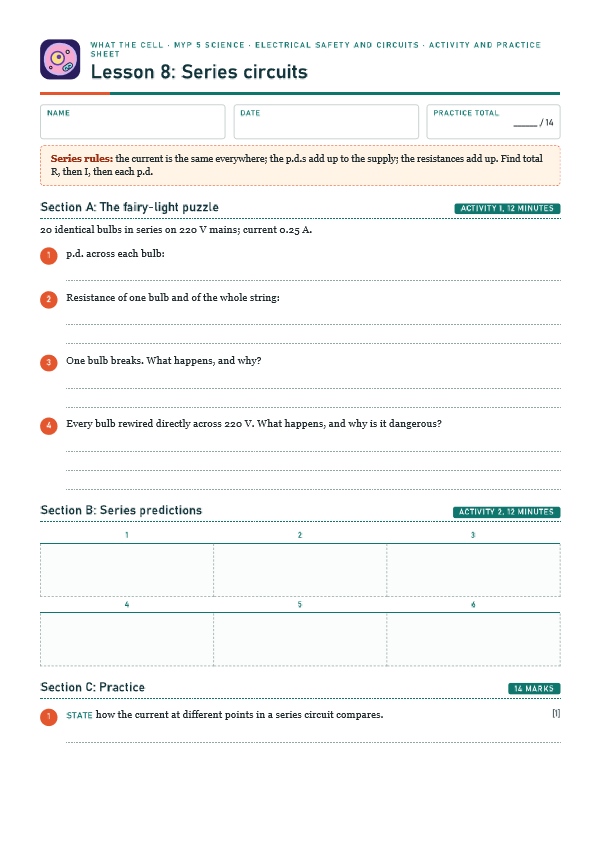

By the end of the lesson you can
- State the rules for current, p.d. and resistance in series
- Calculate the total resistance and the current in a series circuit
- Calculate how the supply p.d. is shared
- Explain why one break turns everything off
Keys: arrows or a presentation clicker move the slides, F for full screen. Slides with a red dot have a video or simulation.
Videos (all 5 minutes or less)
- 4:56
Series and parallel circuits
FuseSchool. Current, p.d. and resistance in series and parallel circuits. Slide 9.
Simulations
- Lab
Circuit Practicals Lab: series and parallel
What the Cell. Read every ammeter in a series circuit, add a third lamp and unscrew one.
- PhET
Circuit Construction Kit: DC
PhET, University of Colorado Boulder. Put two resistors in series and check that the p.d.s add up to the battery.
Print and practise

Activity and practice sheet
Used in the lesson’s activities, with practice questions. Your teacher has the answers.
Download (PDF)Lesson 8 slides
All 22 slides in one file, to read again or print. The video buttons on the slides open YouTube.
Download the slides (PDF)Revising? The Revision tab on the unit page has the unit notes and review.
Class activity pack
Everything to print for the lesson’s activities: picture cards, sorting mats, station cards with their kit lists, and the teacher’s set-up notes. Print it before class.
Download the activity pack (PDF)Notes: Series circuits
One path
In a series circuit the components are in a single loop, so every charge passes through every component. A break anywhere stops the current everywhere.
Rule 1: current
The current is the same at every point: I = I1 = I2.
Rule 2: p.d.
The supply p.d. is shared between the components: V = V1 + V2. Identical components share it equally; a bigger resistance gets a bigger share.
Rule 3: resistance
Resistances in series add: R = R1 + R2. Adding a component increases the total resistance, so the current falls and lamps get dimmer.
How to calculate
Find the total resistance, then the current I = V / R, then each p.d. with V = I × R. Check that the p.d.s add up to the supply.
Series at home
Switches, fuses and circuit breakers are in series with what they control, so all the current passes through them and they can break the circuit. Appliances are not in series: they are in parallel.
Key words
| series circuit | components one after another in a single loop |
|---|---|
| I = I1 = I2 | the current is the same at every point in series |
| V = V1 + V2 | the supply p.d. is shared between components |
| R = R1 + R2 | resistances in series add up |
| potential divider | resistors in series that share a p.d. in proportion to their resistances |
| open circuit | a gap anywhere stops the current everywhere in series |
| in proportion | a bigger resistance gets a bigger share of the p.d. |